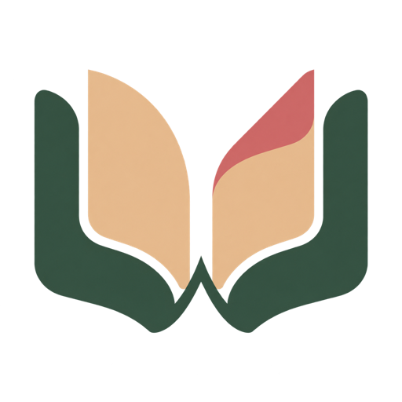

Aa
Оберіть рівень
У бібліотеці доступні 24 оригінальні історії з об’ємнішими текстами.

Word by Word24 історії від A1 до B2, довші тексти та переклад будь-якого слова просто під час читання.
Обрати текст →The morning air felt crispПЕРЕКЛАД СЛОВАсвіжий, бадьорийКартка з’являється поряд зі словом. and clear. A soft wind moved through the pines.
Слово підсвічується лише при наведенні. Переклад з’являється поряд і не закриває текст.
У бібліотеці доступні 24 оригінальні історії з об’ємнішими текстами.
Будь-яке слово стане зеленим при наведенні й покаже переклад за кліком.
Подвійний клік закриває переклад — без зайвих вікон і дій.
24 оригінальні історії від A1 до B2. У кожній — кілька повноцінних абзаців для спокійного читання.
Натисніть на будь-яке слово. Переклад з’явиться збоку від обраного слова, а подвійний клік закриє картку.
Завантаження TXT, FB2 та EPUB зараз у розробці. Поки можна читати 24 вбудовані тексти.
Відкрити бібліотеку →Дякуємо! Функцію завантаження книжок позначено як очікувану.